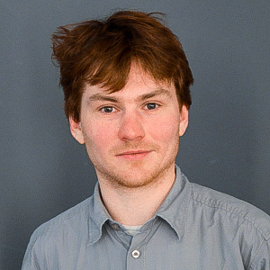

I've been involved in R&D and software development for over 10 years: starting with video enhancement for people with visual impairment, leading later to work on driving simulation for use in studying night-driving difficulties. After several years of research in the field of driving and transportation, I now work as a consultant, focusing on software solutions for mobility and environment data-driven projects. Although I have worked with several languages in frontend and backend, I'm most comfortable doing API and backend work in node.js and Python.
Further information about me and my work including a list of publications from my time in research can be found on LinkedIn. Code contributions can be found on GitHub.
Professional Experience
- 10/2016-3/2017
& 11/2017-present
-
Software Engineer
- Building infrastructure for the collection and model-based visualization of air quality data from a sensor network
- 4/2016-12/2016
-
Software consultant and co-founder of the resulting company
- 1/2015-12/2015
-
Technical Director and co-founder of the resulting company
- Development of a flexible platform for data processing and visualization for the mobility industry
- 4/2013-present
-
Freelance Software/Web Developer
On the following projects (current roles/projects marked in bold):
- 3/2009-6/2014
-
Chair of Traffic Engineering and Control, Technische Universität München
Research Assistant
- Responsible for partner contribution to an EU FP7 project (SOCIONICAL - exploring the interfaces between human behavior and technology that influences that behavior in the realm of traffic and crowd management)
- Teaching and student thesis supervision
Higher Education
- 10/2007-7/2009
-
MSc in Electronics by Research, University of York, UK
Thesis: Development of a System to study Glare Sensitivity in a Driving Simulator
- The research was conducted at Eli Peli's Lab at the Schepens Eye Research Institute, Boston (Harvard Medical School affiliate) during a paid research stay (8/2007-11/2008)
- 10/2002-7/2007
-
MEng in Electronics with Media Technology and a Year in Industry, University of York, UK
Thesis: StroMoHab - Environment and Task Creation
Skills and other activities
- Languages
-
English: native
German: fluent
French: can get by
- Activism and community contributions
- IT
- Languages: Python, JavaScript/node.js, Java, C/C++
- Web: HTML(5), CSS(3), Flask, Express, jQuery, React.js, AngularJS, Bootstrap, ElementalUI
- Mobile: Cordova, Android SDK
- DevOps/Sysadmin: Docker, Npm/Grunt, AWS, Bash, Supervisor, Cron
- Data: Postgresql, MongoDB, Accumulo/Hadoop, Kafka
- Office, graphics and video: OpenOffice, MS Office, Markdown, LaTeX, GIMP, Final Cut Pro